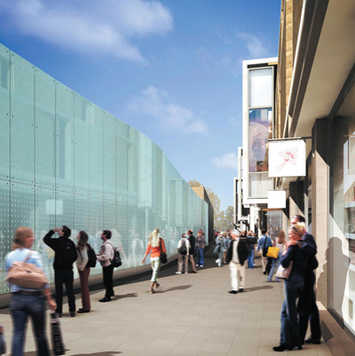

Jane Watt was commissioned by Land Securities to work with their landscape architects and Architects, Panter Hudspith to develop a work within the Christ's Lane Development. The work is a long wall of glass. Entitled 'Wall of Letters' the work consists of approximately 100 glass panels and will incorporate almost 32,000 letters in total, creating a monumental word-search.

The artist writes:
One of the main concepts for the wall was to create an artwork that is built up from different people's associations and experiences of the area. Each time a person looks at the wall they might find a different word. It will provide a unique experience for each viewer, with some finding a few words and others constructing more complicated stories. Every viewing will be different, adding an element of intrigue to the wall.
- from artist's proposal.